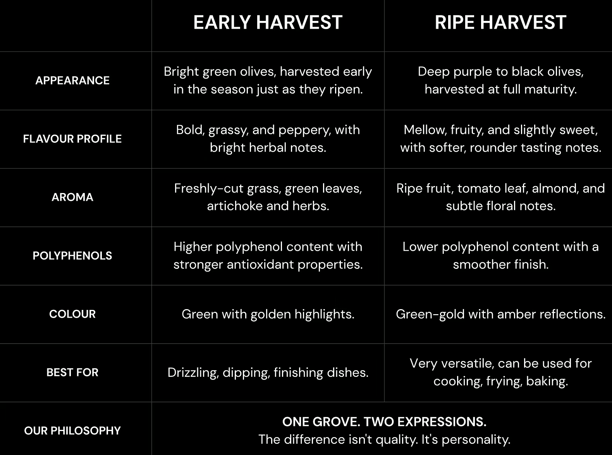

Founded in 2021 in Aydın, Turkey, NizOlive was created to honour one of the world’s oldest and most treasured foods: olive oil.
Rooted in the fertile landscapes of Aydın, NizOlive is the result of a family’s lifelong connection to the olive tree. Growing up among olive groves, founder Nebi Yorgun developed a deep appreciation for the land, the harvest, and the traditions passed down through generations. Inspired by this heritage, he transformed a passion for exceptional olive oil into a modern brand built on care, craftsmanship, authenticity, and respect for nature.
Using the Memecik olive — Turkey’s only olive variety protected by European Union Geographical Indication (GI) status — NizOlive produces exceptional extra virgin olive oil with an acidity level of just 0.2–0.3%, delivering remarkable purity, vibrant fruitiness, balanced bitterness, and a smooth finish.
Every harvest reflects a deep respect for the land, while every bottle carries the story of a family dedicated to preserving a rich Anatolian tradition.
From grove to table, NizOlive combines heritage, innovation, and an unwavering belief that exceptional olive oil should be enjoyed by everyone.
Nestled among the sun-drenched hills of Aydın, NizOlive’s groves are home to the renowned Memecik olive — a variety deeply connected to the region’s landscape and traditions. Shaped by fertile soils, Mediterranean breezes, and generations of careful cultivation, these groves produce olives celebrated for their rich flavour, high polyphenol content, and exceptional quality.
Harvest takes place at precisely the right moment, when the fruit has developed its distinctive character while retaining its natural freshness. Each olive is carefully selected and quickly cold-pressed to preserve the aromas, flavours, and nutritional benefits that define NizOlive’s oils.
For NizOlive, the grove is more than a place of production. It is the heart of the brand — a living connection between the land, the olive tree, and the generations of people who have cared for both. Every bottle begins here, among the ancient landscapes of the Aegean coast.
